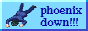
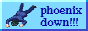

07/31/25: Finally caved to make a new shrine ... it's not the most detailed thing
ever, but I wanted to blab about my favourite Bleach character
Ukitake and list all the alt cards I got from the Bleach
Brave Souls game
07/27/25: Updated /now and reorganized my index page to add
some new webrings. Also changed the front video to one of adef's cool pokemon videos!
07/16/25: Gallery has been updated to 2015; I'm working
backwards since it's a lot more artwork I need to do in the past vs more recent years, so
I'd rather knock them out first
07/14/25: Completely overhauled /blog with a new look! I'll
be using it for a lot more 'looser' blogging as well. Updated front page video as well!
07/12/25: New now page with what's been going on, though it's
a little emptier than some of the other weeks (I did look through my journal
and most stuff was either minor life stuff, or website work which I already documented)
07/08/25: Created an art page! I finally caved to make one
to document my artwork throughout the years, though I'll be curating which ones I add. So
far it's only 2025 and part of 2012 and earlier since there's some art I haven't
uploaded yet
07/08/25: A few changes inbound: I added a full font toggle with different font
options, and opted to remove my dark/light mode toggle for the fully built in prefers-system
CSS code. Also adjusted the index page layout. On a more character end, I finally brought
over Sylvie's game kit, cause I realize I never did actually include it in their character
page even though it's been fully designed. By extension, I did now finally come up with
recommended weapons, artifacts, and teams for them which I did not have before.
07/05/25: Added polls to the index page, even though it's fucking ass to set
up; thanks to starry-knight for figuring
out how to do it (aka github page you embed)
06/30/25: Made another OC page!! Although it's not as
fleshed out, he's Hideki's hubby and still means a lot to me even if retired.
06/28/25: Updated /now page again! ... I didn't realize it's
been a bit over two weeks since my last update; I wanna try to keep them to a bi-weekly
basis for my own tracking as well to look back on for funsies
06/24/25: Added a /toybox page to store cute pixels,
inspired off other toyboxes!! I ... do need to make a nicer pixel shelf though ...
06/11/25: New /now entry to catch everything up to the present
06/09/25: Note to self don't make folder structures without lowercase names again ...
migrating everything to new folder names sucked ass.
06/06/25: Added a YouTube video to the front! Which is uh ... right below here :P
I'll just be using it to drop cool videos I enjoyed on a [unknown] time basis
06/04/25: New /blog entry mostly around journaling for me
05/31/25: I found Kalechip's cool fake listography page template and I wanted to make
a little page for just thought dumps + random links
I feel won't fit into my bookmarks page
05/28/25: New /blog entry yapping mostly about
recognizing traits of myself (some of which I didn't know) in my own OCs.
(I also expanded more on my media log, but that's minor compared to this 😉)
05/27/25: I caved and made a /media-log to document some
of my tracked media in a single place; although it won't be everything I list in my tracking
specific sites, I'd like to show off the stuff I've consumed and my thoughts on them!
05/25/25: New /now entry! Just new life updates + what's
been going on
05/23/25: New blog post, though
I'd call it more of an unorganized thought dump. Mostly surrounding me talking about how I
view my own identity, and more as something to empty my brain out of my thoughts! It's
definitely a more personal blab.
05/19/25: Brought in one of my oldest OCs which is my
Bleach OC! Her profile is rough cause god knows it was written
well over ten years ago, but she's one of my more developed OCs I had immensely active for
3–4 years before she was retired. Had it not been for her, I'd have never met such
wonderful people in the OC/Canon community back then
05/15/25: New /recipe for pork
tenderloin!! Also updated /blog with a new post about being
non-sharing in the yume community
05/14/25: Began work on the program list on my
/bookmarks, though I know I'm still missing quite a few
05/13/25: Added a feed!! It'll be a reflection of future updates made here
05/12/25: Added a /now page to try to track what's been going
on with my life cause my memory is SO peepee poo poo
05/09/25: Got /bookmarks up and running with some of my
firefox extensions! Also finished /khaliun's OC page too
05/07/25: Added my /oc hub and made
/hideki's page ... slowly adding my other blorbos in
05/05/25: Happy one month anniversary to this website coming to be!! Nothing big has
been going on, mostly minor fixes + CSS tweaks
05/02/25: Euehgugh dark mode overhaul ... so many pages to put scripts into but ...
all pages should be on the same toggle to swap between dark/light mode
05/01/25: Finished my /zhongli shrine!! Now all
that's left that's empty are my recipes and bookmarks ...
04/30/25: New /blog post about some nostalgia over old
MMO games I've played
04/29/25: RAAAH my OC/Canon shrine is DONEEEE
LETS GOOOOO!!!!!
04/27/25: Recipe page + first two recipes added, finished my 3 main OC pages, and a
lot more back-end keeping ... I'm beginning my first shrine right now!!
04/24/25: First OC page is now live!!! And the template is set up for me to easily
remove sections I don't need/personalize colours so more should be coming out soon for my
two other main OCs 😏
04/22/25: Finally got an accessible nav bar in ... my brain hurts from it ... nav bar
should be navigatable using arrow keys.
04/20/25: New webring added!! Also shuffled some stuff around on the index (like this
update zone). Also yay more responsive nav header with dropdowns!
04/17/25: Bleh mostly been doing back-end stuff (image optimizing + aria-hidden),
school is nuking me rn ...
04/13/25: Yay about me is live, though I'm having a hoot
figuring out tabs ...
04/12/25: HAHAH font toggle + persistence on refresh/pages FINALLY works. I mostly
added it for days when its hard for even my eyes to focus on the pixel text, so as a simple
toggle to Arial which is easiest on my eyes.
04/11/25: Uhh, added a bunch of stuff ... adjusting my credits page + began a sitemap
+ did some mobile responsiveness work.
04/10/25: Ughh re-coded the entire site to use a grid system, so it's not reliant on
the template I began with. Everything is now properly marked in the CSS + HTML, and it's
somewhat responsive on mobile. I'll probably keep just the main content visible on
mobile since I haven't figured out how to force the sidebars to re-size to the screen width.
04/08/25: Marquees beloathed ... no success in getting a javascript alternative to
work, so I just used the good old <marquee> code lmaoooo. Added a site button too, so
I think I'm done with the barebone setting up for the layouts.
04/07/25: Added a manifesto page, though uh ... gonna be
pondering on what to write in it for a good while. Otherwise just CSS mucking about.
04/06/25: Why is it so hard to decide on a theme ... revamped the entire CSS layout
to match closer to my Toyhouse one.
04/05/25: Made the site ... HTML and CSS spooky, it's been years since I've really
went super in depth. Made a to-do to keep note of what I need ...
to do ...
.png)
.png)
.png)
.png)
.png)
.png)
.png)
.png)


 
